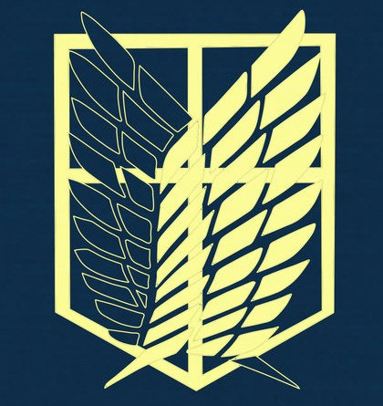
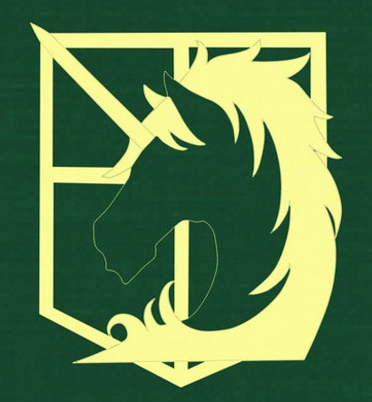
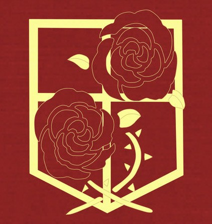

Organizações
Tropa de Exploração
A Divisão de Reconhecimento, popularmente chamada de Tropa de Exploração, é a divisão Militar responsável por lidar com titãs. Os soldados focam em sair para o mundo exterior, fora das muralhas que os protegem, a fim de pesquisar sobre os titãs e explorar recursos. O símbolo são as Asas da Liberdade, e indica a esperança de que um dia a humanidade irá se libertar do domínio dos terríveis titãs.
Polícia Militar
É a divisão que deve lidar com a ordem dentro das muralhas, diferentemente da Tropa de Exploração, seu dever é lidar com humanos. Cobrando impostos, fazendo divisões de terras e tem o dever de proteger o rei. Apesar disso, é o setor mais corrupto de todos, já que ele é a autoridade militar máxima e não possui supervisões rigorosas, então alguns membros se aproveitam do trabalho para subornar os cidadãos.
Guardas Estacionárias
Essa tropa tem o dever de vigiar as muralhas contra possíveis ataques de titãs, fazer reparos e melhorias nos muros. São os soldados que mais sabem realizar tarefas, pois tem de lidar com humanos e também com titãs, usando canhões, rifles e outros tipos de armas.